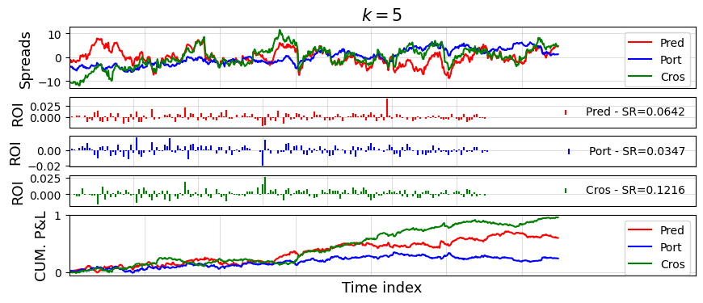
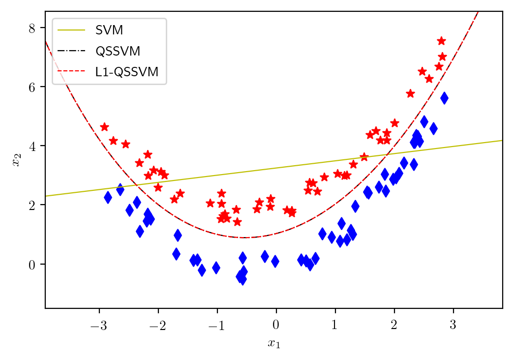
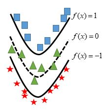
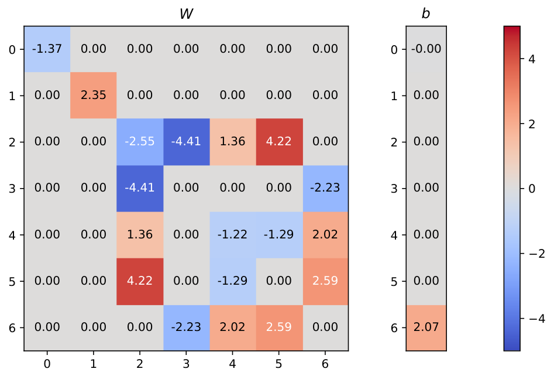
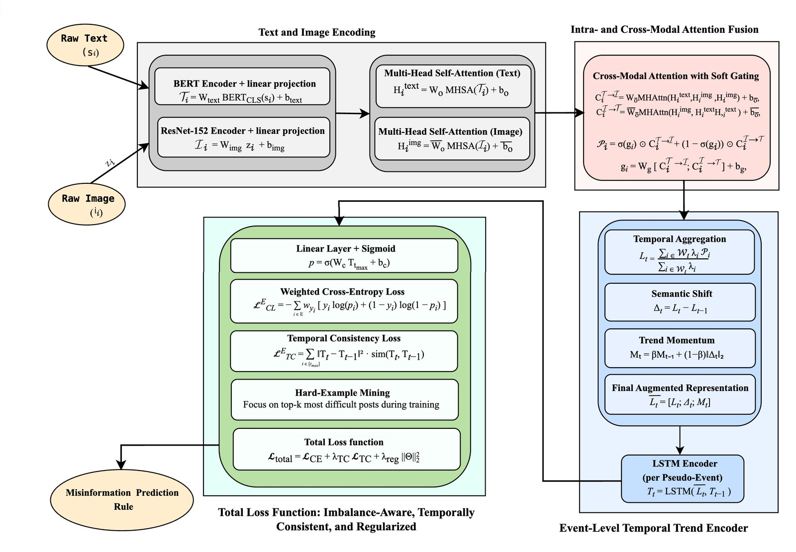
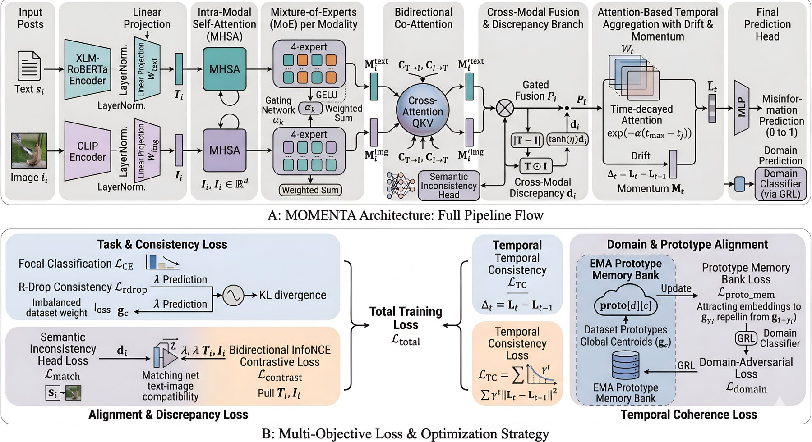
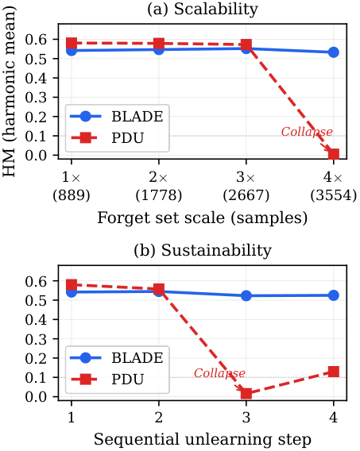

Research

My research develops mathematical methods for sparse and structured learning, with emphasis on exact sparsity, constrained optimization, and machine learning. The unifying idea is to put structure into models directly—how many assets a portfolio may hold, how curved a classifier may be, how text and images should be fused—rather than hoping a generic method will discover that structure on its own. Current work follows three directions that share a common base in nonconvex constrained optimization.
The summaries below are written for students as well as colleagues. Each section names a few representative papers, explains what the method is doing in plain language, and shows a figure from the paper. The full list is on the Publications page.
Working With Students
I welcome students who are persistent, motivated to learn, and willing to work carefully. You do not need to already know all of the mathematics. A foundation in programming, machine learning, optimization, or natural language processing is enough to start. Typical first projects include reproducing a figure from a paper, implementing a block of an algorithm, or running a controlled experiment on a public dataset. Several class projects have continued as practicum or independent research, including work with collaborators at AU and at other universities.
If you would like to work together, email mousavi@american.edu with your CV and a short note on your interests (coursework, projects, or links to code). Geographic location is not a limitation; remote collaboration is fully supported.
Cardinality-Constrained Structured Optimization
Many real problems ask for a solution that is not just accurate, but also simple in a precise way: hold at most k stocks, keep only a few features, or recover a signal that is sparse. Convex relaxations are convenient, but they often cannot enforce that exact budget. I develop penalty decomposition methods that treat cardinality and related constraints directly, with convergence guarantees and algorithms that stay practical on real data.
In finance this means portfolios that are sparse (few assets, lower trading cost), volatile enough to be useful, and, when desired, mean-reverting, so prices tend to oscillate around a level rather than wander. The same algorithmic ideas extend to sparse symmetric sets, hybrid quantum-classical compressive sensing (Weaver), and low-rank quadratic optimization (the rank-collapse principle).
Statistical Proxy Based Mean-Reverting Portfolios with Sparsity and Volatility Constraints
A. Mousavi, G. Michailidis. International Transactions in Operational Research, 2025.
Mean reversion can be measured in more than one way (predictability, portmanteau, and crossing statistics). This paper puts those proxies into one optimization model with sparsity and volatility constraints, and solves it with a unifying penalty decomposition method. On S&P 500 data, the crossing-statistics proxy produces the most attractive sparse portfolios among the three.

Cardinality Constrained Mean-Variance Portfolios: A Penalty Decomposition Algorithm
A. Mousavi, G. Michailidis. Computational Optimization and Applications, 2025.
Markowitz mean-variance optimization is classical, but asking for “exactly k assets” makes the problem nonconvex. Regularization can encourage sparsity without letting the investor set k directly. This paper solves the cardinality-constrained problem with a penalty decomposition method whose block updates have closed form, and shows that the method is faster than strong commercial and penalty baselines on real indexes while matching their risk-return profile.
Related work in this line includes a penalty decomposition method with greedy improvement for mean-reverting portfolios (ITOR 2023), sparse mean-variance-CVaR portfolios with short-selling (JJIAM 2026), an efficient quasi-Newton penalty decomposition algorithm for minimization over sparse symmetric sets (under review at Mathematical Programming Computation), Weaver, a hybrid quantum-classical method for binary compressive sensing (submitted to AAAI 2027), and a preprint with Mojtaba Soltanalian on the rank-collapse principle for low-rank quadratic optimization.
Sparse And Structured Quadratic Surface Support Vector Machines
A linear SVM draws a flat wall between two classes. That is easy to interpret, but many datasets are separated by a curve. Kernel SVMs can bend the boundary, at the cost of choosing a kernel and losing a direct geometric picture. Kernel-free quadratic surface SVMs (QSVMs) fit a quadratic surface in the original features, so the boundary can curve without a kernel. The price is that the number of parameters grows like the square of the dimension. My work uses sparsity and Universum data so the quadratic model stays flexible without becoming a dense, hard-to-read surface.
Quadratic Surface Support Vector Machine with ℓ1 Norm Regularization
A. Mousavi, Z. Gao, L. Han, A. Lim. Journal of Industrial and Management Optimization, 2022.
ℓ1 regularization on the quadratic coefficients does two useful things. If the data are essentially linear, a large penalty flattens the surface toward an ordinary SVM. If the data are quadratic, the same penalty can recover the sparse pattern in the true surface. The figure below is the simplest picture of why the extra curvature matters: a linear SVM cuts through a U-shaped class structure, while the quadratic model follows it.

Sparse ℓ1-Norm Quadratic Surface Support Vector Machine with Universum Data
H. Moosaei, A. Mousavi, M. Hladík, Z. Gao. Soft Computing, 2023.
Universum points are examples that belong to neither class. They sit in the gap and tell the classifier where not to put the boundary. Combined with a quadratic surface and ℓ1 sparsity, they improve generalization, especially when labeled data are limited. A later twin-QSVM paper uses the same idea for imbalanced classification, building two nonparallel quadratic surfaces so the minority class is not swallowed by the majority class.

ℓ0-Regularized Quadratic Surface Support Vector Machines
A. Mousavi, R. Zandvakili, Z. Gao. arXiv:2501.11268, 2025 (journal version under review).
ℓ1 encourages sparsity; ℓ0 asks for an exact number of nonzero quadratic coefficients. A penalty decomposition algorithm produces surfaces that satisfy first-order optimality conditions, with subproblems that admit closed-form or efficient dual solutions. The heatmap below is the practical payoff: most entries of the quadratic matrix W are driven to zero, so the classifier remains nonlinear but uses only a few interactions among features.

Ongoing work studies ensembles of random sparse quadratic twin parametric-margin SVMs (SSRN preprint) and quadratic twin SVMs for imbalanced data (IJMLC 2026).
Robust Multi-Scale And Multi-Modal Learning
Real systems mix sources: a social media post is text plus an image plus a timestamp; an EEG recording is many channels over time; a large language model may need to forget some facts without collapsing on the rest. Distribution shift, class imbalance, and weak alignment between modalities are the usual failure modes. This direction builds lightweight, attention-based models that stay accurate across subjects, events, and domains, and that remain efficient enough to train and inspect.
E-CaTCH: Event-Centric Cross-Modal Attention with Temporal Consistency and Class-Imbalance Handling for Misinformation Detection
A. Mousavi, Y. Abdollahinejad, R. Corizzo, N. Japkowicz, Z. Boukouvalas. IEEE Transactions on Computational Social Systems, 2026.
Most detectors score posts one at a time. Misinformation, however, often spreads as a story: related posts, over days, with text that may not match the image. E-CaTCH groups posts into pseudo-events, aligns BERT text features with ResNet image features through intra- and cross-modal attention, and tracks how the event evolves with a trend-aware temporal encoder. Training uses class weighting, temporal consistency, and hard-example mining so rare deceptive events are not ignored.

MOMENTA: Mixture-of-Experts over Multimodal Embeddings with Neural Temporal Aggregation for Misinformation Detection
Y. Abdollahinejad, A. Mousavi, N. Hassan, K. Shu, N. Japkowicz, S. Khosravi, A. Karami. arXiv:2604.16172, 2026 (submitted).
MOMENTA is a later, more modular architecture in the same family. Separate experts specialize per modality, bidirectional co-attention aligns text and image, and a temporal branch tracks drift and momentum so a campaign that changes story over time is still recognized. The figure is useful for students because it makes the design pattern explicit: encode, specialize, align, fuse, then aggregate over time.

EMO-CARE: EEG Multi-Scale Temporal Modeling with Channel-Aware Feature Attention for Robust Subject-Independent Emotion Recognition
Y. Abdollahinejad, A. Mousavi, P. Siaplaouras, Z. Boukouvalas, R. Corizzo. IEEE Open Journal of the Computer Society, 2026.
EEG emotion models often look strong when trained and tested on the same person, then fail on a new person. EMO-CARE is a lightweight network that reads the signal at several time scales and uses feature-level attention to weight the scales that matter. Evaluated under leave-one-subject-out protocols on SEED, SEED-V, and DREAMER, it is built for the harder, more realistic setting: the test subject was never seen in training. A related IEEE Access survey reviews EEG and physiological emotion recognition methods in healthcare.
BLADE: Bilevel Low-Rank Augmented-Lagrangian Erasure for LLM Unlearning
Md Toufikuzzaman, A. Mousavi, D. Lee. EMNLP 2026 (main conference, to appear).
Unlearning asks a language model to forget targeted content (privacy, copyright, or outdated facts) without destroying the rest of its behavior. BLADE treats this as a constrained bilevel problem: forget in the outer loop, repair retain quality in the inner loop, with a low-rank (LoRA) bottleneck and an augmented-Lagrangian safeguard. The figure below is the practical test. A competing method collapses when the forget set grows or when unlearning is applied in sequence; BLADE stays stable.

Related projects include CAM-Soft for soft hate speech detection, MURAL for multimodal recommendation, physics-conditioned attention for next-day wildfire spread prediction, and an earlier IEEE BigData paper on event-based multimodal fusion for misinformation detection during high-impact events.